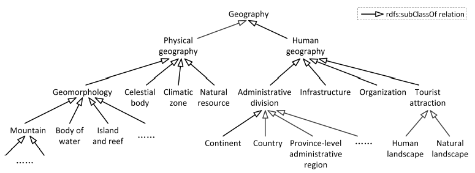

07 July 2016
The Clinga (Chinese linked geographical dataset) contains generally but not exclusively a large number of geographical entities in China (e.g. cities, mountains) and their relations (e.g. capital-of). The Ontology for Clinga is a new geography ontology, which has been manually created to categorize a wide range of physical and human geographical entities.
We divide the Clinga Ontology into two main branches, namely physical geography and human geography, by discussing with the professors at the School of Geographic and Oceanographic Sciences in our university and referencing the geographical textbooks and website. The actual version contains 130 classes with preferred labels in Chinese and alternative labels in both Chinese and English. See the following figure for an excerpt of our geography ontology.

In order to promote the integration and sharing of both Chinese and cross-lingual geographical knowledge, 118 mappings among Clinga Ontology, DBpedia Ontology and GeoNames Ontology are exploited based on our best effort.
The Clinga Ontology is available in OWL: clinga_ontology, clinga_mappings.
Class
ObjectProperty
DatatypeProperty
In addition to the classes and properties above, the clinga ontology also references wgs84_pos:long and wgs84_pos:lat.
Class: clinga:ZiZhiXian
Autonomous counties banners are autonomous areas of China.
URI: http://ws.nju.edu.cn/clinga/ZiZhiXian
Superclass: clinga:XianJiXingZhengQu
Label: 自治县@zh
Comment: 自治县在中国属于一级地方民族自治政权，行政地位与普通的县相同。@ZH
PrefLabel: 自治县@zh
AltLabel: autonomous county@en
Class: clinga:TeQu
URI: http://ws.nju.edu.cn/clinga/TeQu
Superclass: clinga:XianJiXingZhengQu
Label: 特区@zh
Comment: 特区特指中国贵州省的六枝特区。@ZH
PrefLabel: 特区@zh
AltLabel: special area@en
Class: clinga:QiYe
URI: http://ws.nju.edu.cn/clinga/QiYe
Superclass: clinga:ZuZhiJiGou
Label: 企业@zh
Comment: 企业是以盈利为目的，运用各种生产要素，向市场提供商品或服务，实行自主经营、自负盈亏、独立核算的法人或其他社会经济组织。@ZH
PrefLabel: 企业@zh
AltLabel: enterprise@en
Properties include: clinga:jingYingFanWei, clinga:gongSiXingZhi, clinga:zongBuDiDian
Class: clinga:HengXing
The fixed stars are celestial objects that do not seem to move in relation to the other stars of the night sky.
URI: http://ws.nju.edu.cn/clinga/HengXing
Superclass: clinga:XingTi
Label: 恒星@zh
Comment: 恒星是由非固态、液态、气态的第四态等离子体组成的，是能自己发光的球状或类球状天体。@ZH
PrefLabel: 恒星@zh
AltLabel: fixed star@en
Class: clinga:ZiRanBaoHuQu
A nature reserve is a protected area of importance for wildlife, flora, fauna or features of geological or other special interest.
URI: http://ws.nju.edu.cn/clinga/ZiRanBaoHuQu
Superclass: clinga:ShengWuJingGuan
Label: 自然保护区@zh
Comment: 自然保护区是对有代表性的自然生态系统、珍稀濒危野生动植物物种的天然集中分布、有特殊意义的自然遗迹等保护对象所在的陆地、陆地水域或海域，依法划出一定面积予以特殊保护和管理的区域。@ZH
PrefLabel: 自然保护区@zh
AltLabel: natural reserve@en
Properties include: clinga:qiHou, clinga:baoHuDuiXiang, clinga:leiXing
Class: clinga:XiaGu
A valley is a low area between hills, often with a river running through it.
URI: http://ws.nju.edu.cn/clinga/XiaGu
Superclass: clinga:DiXingDiMao
Label: 峡谷@zh
Comment: 峡谷是深度大于宽度谷坡陡峻的谷地。@ZH
PrefLabel: 峡谷@zh
AltLabel: valley@en
Class: clinga:DianLiSheShi
URI: http://ws.nju.edu.cn/clinga/DianLiSheShi
Superclass: clinga:ChengShiJiChuSheShi
Subclass: clinga:FaDianZhan
Label: 电力设施@zh
Comment: 电力设施是发电、变电、输电、配电和供电有关设备的总称。@ZH
PrefLabel: 电力设施@zh
AltLabel: power infrastructure@en
Class: clinga:LinQu
URI: http://ws.nju.edu.cn/clinga/LinQu
Superclass: clinga:XianJiXingZhengQu
Label: 林区@zh
Comment: 林区特指中国湖北省的神农架林区。@ZH
PrefLabel: 林区@zh
AltLabel: forest region@en
Class: clinga:YiYuan
A hospital is a health care institution providing patient treatment with specialized staff and equipment.
URI: http://ws.nju.edu.cn/clinga/YiYuan
Superclass: clinga:WenJiaoTiWeiSheShi
Label: 医院@zh
Comment: 医院是以向人提供医疗护理服务为主要目的医疗机构。@ZH
PrefLabel: 医院@zh
AltLabel: hospital@en
Properties include: clinga:yiYuanDengJi, clinga:yiYuanLeiXing, clinga:jingJiLeiXing, clinga:yuanZhang, clinga:zhuGuanBuMen, clinga:jingYingXingZhi
Class: clinga:ChengShiJiChuSheShi
URI: http://ws.nju.edu.cn/clinga/ChengShiJiChuSheShi
Superclass: clinga:JiChuSheShi
Subclass: clinga:ShuiLiSheShi, clinga:JiaoTongSheShi, clinga:DianLiSheShi
Label: 城市基础设施@zh
Comment: 城市基础设施是为社会生产和居民生活提供公共服务的物质工程设施。@ZH
PrefLabel: 城市基础设施@zh
AltLabel: urban infrastructure@en
Class: clinga:XianJiXingZhengQu
URI: http://ws.nju.edu.cn/clinga/XianJiXingZhengQu
Superclass: clinga:XingZhengQuHua
Subclass: clinga:ZiZhiQi, clinga:ZiZhiXian, clinga:ShiXiaQu, clinga:Qi, clinga:XianJiShi, clinga:Xian, clinga:TeQu, clinga:LinQu
Label: 县级行政区@zh
Comment: 县级行政区的行政地位与“县”相同的行政区划总称，其管辖乡级行政区，为乡、镇的上一级行政区划单位。@ZH
PrefLabel: 县级行政区@zh
AltLabel: county-level administrative region@en
Class: clinga:HuaShiRanLiaoKuang
URI: http://ws.nju.edu.cn/clinga/HuaShiRanLiaoKuang
Superclass: clinga:KuangChang
Subclass: clinga:MeiKuang, clinga:YouTian, clinga:TianRanQiTian
Label: 化石燃料矿@zh
Comment: 化石燃料矿指富含矿石燃料的区域。@ZH
PrefLabel: 化石燃料矿@zh
AltLabel: fossil fuel@en
Class: clinga:JieDao
URI: http://ws.nju.edu.cn/clinga/JieDao
Superclass: clinga:XiangJiXingZhengQu
Label: 街道@zh
Comment: 街道是中国大陆的乡级行政区。@ZH
PrefLabel: 街道@zh
AltLabel: subdistrict@en
Class: clinga:HeLiu
A river is a natural flowing watercourse, usually freshwater, flowing towards an ocean, sea, lake or another river.
URI: http://ws.nju.edu.cn/clinga/HeLiu
Superclass: clinga:ShuiYu
Label: 河流@zh
Comment: 河流指由一定区域内地表水和地下水补给，经常或间歇地沿着狭长凹地流动的水流。@ZH
PrefLabel: 河流@zh
AltLabel: river@en
Properties include: clinga:faYuanDi, clinga:zhuYaoZhiLiu, clinga:suoShuShuiXi
Used with: clinga:zhuYaoZhiLiu, clinga:suoShuShuiXi
Class: clinga:HaiTan
A beach is a landform along the coast of an ocean or sea.
URI: http://ws.nju.edu.cn/clinga/HaiTan
Superclass: clinga:DiXingDiMao
Label: 海滩@zh
Comment: 海滩是由海水搬运积聚的沉积物（沙或石砾）堆积而形成的岸。@ZH
PrefLabel: 海滩@zh
AltLabel: 海岸@zh
Class: clinga:JiChang
An airport is an aerodrome with facilities for flights to take off and land.
URI: http://ws.nju.edu.cn/clinga/JiChang
Superclass: clinga:JiaoTongSheShi
Label: 机场@zh
Comment: 机场是搭乘空中交通及供飞机起降的设施。@ZH
PrefLabel: 机场@zh
AltLabel: airport@en
Used with: clinga:jiChang
Class: clinga:GuJiJingGuan
URI: http://ws.nju.edu.cn/clinga/GuJiJingGuan
Superclass: clinga:RenWenJingGuan
Label: 古迹景观@zh
Comment: 古迹景观指的是人类社会历史发展过程留存下来的活动遗址、遗迹、遗物及遗风等。@ZH
PrefLabel: 古迹景观@zh
AltLabel: historic site@en
Class: clinga:HaiYang
URI: http://ws.nju.edu.cn/clinga/HaiYang
Superclass: clinga:ShuiYu
Subclass: clinga:Yang, clinga:Hai
Label: 海洋@zh
Comment: 海洋指地球表面被各大陆地分隔的彼此相通的广大水域。@ZH
PrefLabel: 海洋@zh
AltLabel: seas and oceans@en
Class: clinga:DiZhiDiMaoJingGuan
URI: http://ws.nju.edu.cn/clinga/DiZhiDiMaoJingGuan
Superclass: clinga:ZiRanJingGuan
Label: 地质地貌景观@zh
Comment: 地质地貌景观是指在自然环境的影响下，地球内力作用和外力作用共同作用形成的景观。@ZH
PrefLabel: 地质地貌景观@zh
AltLabel: geological and geomorphic landscape@en
Class: clinga:TianRanQiTian
In common usage, deposits rich in natural gas are called natural gas fields.
URI: http://ws.nju.edu.cn/clinga/TianRanQiTian
Superclass: clinga:HuaShiRanLiaoKuang
Label: 天然气田@zh
Comment: 天然气田指富含天然气的地域。@ZH
PrefLabel: 天然气田@zh
AltLabel: 气田@zh
Class: clinga:JiGuan
URI: http://ws.nju.edu.cn/clinga/JiGuan
Superclass: clinga:ZuZhiJiGou
Label: 机关@zh
Comment: 机关一般指政府职能部门。@ZH
PrefLabel: 机关@zh
AltLabel: state organ@en
Class: clinga:ShangChang
URI: http://ws.nju.edu.cn/clinga/ShangChang
Superclass: clinga:ShangYeFuWuSheShi
Label: 商场@zh
Comment: 商场指聚集在一起的各种商店组成的市场，一般是面积较大、商品比较齐全的大商店。@ZH
PrefLabel: 商场@zh
AltLabel: marketl@en
Class: clinga:ZiZhiQi
An autonomous banner is a special type of banner set up by the People’s Republic of China.
URI: http://ws.nju.edu.cn/clinga/ZiZhiQi
Superclass: clinga:XianJiXingZhengQu
Label: 自治旗@zh
Comment: 自治旗是中国内蒙古自治区的县级行政区划。@ZH
PrefLabel: 自治旗@zh
AltLabel: autonomous banner@en
Class: clinga:WenJiaoTiWeiSheShi
URI: http://ws.nju.edu.cn/clinga/WenJiaoTiWeiSheShi
Superclass: clinga:ShengHuoFuWuSheShi
Subclass: clinga:TiYuChang, clinga:TiYuGuan, clinga:GongYuan, clinga:BoWuGuan, clinga:YiYuan, clinga:XueXiao, clinga:GuangChang
Label: 文教体卫设施@zh
Comment: 文教体卫设施包括各类文化、教育、体育和卫生设施。@ZH
PrefLabel: 文教体卫设施@zh
AltLabel: infrastructure for culture, education, sports and health@en
Class: clinga:Xiang
URI: http://ws.nju.edu.cn/clinga/Xiang
Superclass: clinga:XiangJiXingZhengQu
Label: 乡@zh
Comment: 乡是县以下的农村行政区域。@ZH
PrefLabel: 乡@zh
AltLabel: township@en
Class: clinga:ZiZhiQu
An autonomous region is a first-level administrative subdivision of China.
URI: http://ws.nju.edu.cn/clinga/ZiZhiQu
Superclass: clinga:ShengJiXingZhengQu
Label: 自治区@zh
Comment: 自治区是一种行政区划名称，在中国成立初期对民族自治地方统称为自治区。@ZH
PrefLabel: 自治区@zh
AltLabel: autonomous region@en
Class: clinga:HeiSeJinShuKuang
URI: http://ws.nju.edu.cn/clinga/HeiSeJinShuKuang
Superclass: clinga:JinShuKuang
Label: 黑色金属矿@zh
Comment: 黑色金属矿指富含黑色金属矿产的区域。@ZH
PrefLabel: 黑色金属矿@zh
AltLabel: ferrous metal mine@en
Class: clinga:Sheng
URI: http://ws.nju.edu.cn/clinga/Sheng
Superclass: clinga:ShengJiXingZhengQu
Label: 省@zh
Comment: 省市地方行政机构名称。@ZH
PrefLabel: 省@zh
AltLabel: 省份@zh
Class: clinga:QiuLing
A hill is a landform that extends above the surrounding terrain.
URI: http://ws.nju.edu.cn/clinga/QiuLing
Superclass: clinga:ShanXi
Label: 丘陵@zh
Comment: 丘陵是地球表面形态起伏和缓，绝对高度在500米以内 ，相对高度不超过200米，由各种岩类组成的坡面组合体。@ZH
PrefLabel: 丘陵@zh
AltLabel: hills@en
Class: clinga:ShengHuoFuWuSheShi
URI: http://ws.nju.edu.cn/clinga/ShengHuoFuWuSheShi
Superclass: clinga:JiChuSheShi
Subclass: clinga:WenJiaoTiWeiSheShi, clinga:ShangYeFuWuSheShi
Label: 生活服务设施@zh
Comment: 生活服务设施是设置在居住区内主要为满足本居住区居民日常生活需要的各项公共建筑和设施。@ZH
PrefLabel: 生活服务设施@zh
AltLabel: public service infrastructure@en
Class: clinga:HuPo
A lake is an area of variable size filled with water, localized in a basin, that is surrounded by land, apart from any river or other outlet that serves to feed or drain the lake.
URI: http://ws.nju.edu.cn/clinga/HuPo
Superclass: clinga:ShuiYu
Label: 湖泊@zh
Comment: 湖泊指湖盆及其承纳的水体。@ZH
PrefLabel: 湖泊@zh
AltLabel: lake@en
Class: clinga:ShuiKu
A reservoir is a storage space for fluids.
URI: http://ws.nju.edu.cn/clinga/ShuiKu
Superclass: clinga:ShuiLiSheShi
Label: 水库@zh
Comment: 水库是拦洪蓄水和调节水流的水利工程建筑物。@ZH
PrefLabel: 水库@zh
AltLabel: reservoir@en
Class: clinga:ShanFeng
URI: http://ws.nju.edu.cn/clinga/ShanFeng
Superclass: clinga:ShanXi
Label: 山峰@zh
Comment: 山峰指尖状山顶并有一定高度。@ZH
PrefLabel: 山峰@zh
AltLabel: mountain peak@en
Used with: clinga:zhuFeng
Class: clinga:ZiRanJingGuan
A natural landscape is the original landscape that exists before it is acted upon by human culture.
URI: http://ws.nju.edu.cn/clinga/ZiRanJingGuan
Superclass: clinga:JingGuanJingDian
Subclass: clinga:DiZhiDiMaoJingGuan, clinga:QiHouQiXiangJingGuan, clinga:ShengWuJingGuan, clinga:ShuiWenJingGuan
Label: 自然景观@zh
Comment: 自然景观是指受到人类间接、轻微或偶尔影响而原有自然面貌未发生明显变化的景观，如极地、高山、大荒漠、大沼泽、热带雨林以及某些自然保护区等。@ZH
PrefLabel: 自然景观@zh
AltLabel: natural landscape@en
Class: clinga:JiChuSheShi
Infrastructure refers to structures, systems, and facilities serving a country, city, or area.
URI: http://ws.nju.edu.cn/clinga/JiChuSheShi
Superclass: clinga:RenWenDiLi
Subclass: clinga:ShengHuoFuWuSheShi, clinga:ChengShiJiChuSheShi
Label: 基础设施@zh
Comment: 基础设施是为社会生产和居民生活提供公共服务的物质工程设施。@ZH
PrefLabel: 基础设施@zh
AltLabel: infrastructure@en
Class: clinga:GuoJia
A country is a region that is identified as a distinct entity in political geography.
URI: http://ws.nju.edu.cn/clinga/GuoJia
Superclass: clinga:XingZhengQuHua
Label: 国家@zh
Comment: 国家是拥有共同的语言、文化、种族、血统、领土、政府或者历史的社会群体。@ZH
PrefLabel: 国家@zh
AltLabel: country@en
Properties include: clinga:zhengZhiTiZhi, clinga:guoJiaLingXiu, clinga:guanFangYuYan, clinga:zhuYaoChengShi, clinga:shouDou, clinga:suoShuZhou, clinga:huoBi, clinga:zhuYaoMinZu, clinga:guoGe, clinga:shiQu, clinga:zhuYaoZongJiao
Class: clinga:GongLu
A highway is any public road or other public way on land.
URI: http://ws.nju.edu.cn/clinga/GongLu
Superclass: clinga:JiaoTongSheShi
Label: 公路@zh
Comment: 公路连接城市、乡村和工矿基地之间，主要供汽车行驶并具备一定技术标准和设施。@ZH
PrefLabel: 公路@zh
AltLabel: highway@en
Class: clinga:Xian
URI: http://ws.nju.edu.cn/clinga/Xian
Superclass: clinga:XianJiXingZhengQu
Label: 县@zh
Comment: 县是县级行政区的一种。@ZH
PrefLabel: 县@zh
AltLabel: county@en
Class: clinga:HuoShan
A volcano is a rupture in the crust of a planetary-mass object, such as Earth, that allows hot lava, volcanic ash, and gases to escape from a magma chamber below the surface.
URI: http://ws.nju.edu.cn/clinga/HuoShan
Superclass: clinga:ShanXi
Label: 火山@zh
Comment: 火山是由固体碎屑、熔岩流或穹状喷出物围绕着其喷出口堆积而成的隆起的丘或山。@ZH
PrefLabel: 火山@zh
AltLabel: volcano@en
Class: clinga:SuMu
URI: http://ws.nju.edu.cn/clinga/SuMu
Superclass: clinga:XiangJiXingZhengQu
Label: 苏木@zh
Comment: 苏木是中国内蒙古的类乡级行政区划。@ZH
PrefLabel: 苏木@zh
AltLabel: sum (country subdivision)@en
Class: clinga:RenWenDiLi
Human geography is the branch of the social sciences that deals with the world, its people and their communities, cultures, economies and interaction with the environment by emphasizing their relations with and across space and place.
URI: http://ws.nju.edu.cn/clinga/RenWenDiLi
Superclass: clinga:DiLi
Subclass: clinga:ZuZhiJiGou, clinga:XingZhengQuHua, clinga:JingGuanJingDian, clinga:JiChuSheShi
Label: 人文地理@zh
Comment: 人文地理是探讨各种人文现象的地理分布、扩散和变化，以及人类社会活动的地域结构的形成和发展规律的一门学科。@ZH
PrefLabel: 人文地理@zh
AltLabel: human geography@en
Class: clinga:ShengJiXingZhengQu
URI: http://ws.nju.edu.cn/clinga/ShengJiXingZhengQu
Superclass: clinga:XingZhengQuHua
Subclass: clinga:ZhiXiaShi, clinga:TeBieXingZhengQu, clinga:ZiZhiQu, clinga:Sheng
Label: 省级行政区@zh
Comment: 省级行政区是中国最高级别的行政区（中国一级行政区）。@ZH
PrefLabel: 省级行政区@zh
AltLabel: province-level administrative region@en
Class: clinga:ShuiLiSheShi
URI: http://ws.nju.edu.cn/clinga/ShuiLiSheShi
Superclass: clinga:ChengShiJiChuSheShi
Subclass: clinga:DaBa, clinga:ShuiKu
Label: 水利设施@zh
Comment: 水利设施是指对自然界的水进行控制、调节、开发、利用和保护，以减轻和免除水旱灾害，并利用水资源，适应人类社会和自然环境需要的设施。@ZH
PrefLabel: 水利设施@zh
AltLabel: water conservancy infrastructure@en
Class: clinga:BoWuGuan
A museum is an institution that cares for (conserves) a collection of artifacts.
URI: http://ws.nju.edu.cn/clinga/BoWuGuan
Superclass: clinga:WenJiaoTiWeiSheShi
Label: 博物馆@zh
Comment: 博物馆是典藏人文自然遗产等的文化教育机构。@ZH
PrefLabel: 博物馆@zh
AltLabel: museum@en
Properties include: clinga:guanZangJingPin, clinga:diDian
Class: clinga:ShuiYu
A body of water is any significant accumulation of water, generally on a planet’s surface.
URI: http://ws.nju.edu.cn/clinga/ShuiYu
Superclass: clinga:DiXingDiMao
Subclass: clinga:XiaoXi, clinga:HeLiu, clinga:HaiYang, clinga:HaiWan, clinga:YunHe, clinga:HaiXia, clinga:Quan, clinga:PuBu, clinga:HuPo
Label: 水域@zh
Comment: 水域指陆地表面的水体，包括河、湖、海等等。@ZH
PrefLabel: 水域@zh
AltLabel: body of water@en
Properties include: clinga:liuJingDiQu
Class: clinga:KuangChang
URI: http://ws.nju.edu.cn/clinga/KuangChang
Superclass: clinga:ZiRanZiYuan
Subclass: clinga:FeiJinShuKuang, clinga:JinShuKuang, clinga:HuaShiRanLiaoKuang
Label: 矿场@zh
Comment: 矿场是地下或地表富含矿物资源的区域。@ZH
PrefLabel: 矿场@zh
AltLabel: mine@en
Class: clinga:ZiRanDiLi
Physical geography (or physiography) focuses on geography as an Earth science.
URI: http://ws.nju.edu.cn/clinga/ZiRanDiLi
Superclass: clinga:DiLi
Subclass: clinga:ZiRanZiYuan, clinga:DiXingDiMao, clinga:QiHouDai, clinga:XingTi
Label: 自然地理@zh
Comment: 自然地理是研究自然地理环境的组成、结构、功能、动态及其空间分异规律的学科，是地理学的一个重要分支学科。@ZH
PrefLabel: 自然地理@zh
AltLabel: physical geography@en
Class: clinga:ZuZhiJiGou
URI: http://ws.nju.edu.cn/clinga/ZuZhiJiGou
Superclass: clinga:RenWenDiLi
Subclass: clinga:JiGuan, clinga:QiYe
Label: 组织机构@zh
Comment: 组织机构是把人力、物力和智力等按一定的形式和结构，为实现共同的目标、任务或利益有秩序有成效地组合起来而开展活动的社会单位。@ZH
PrefLabel: 组织机构@zh
AltLabel: organization@en
Used with: clinga:zhuGuanBuMen, clinga:guanLiDanWei
Class: clinga:PuBu
A waterfall is a place where water flows over a vertical drop or a series of drops in the course of a stream or river.
URI: http://ws.nju.edu.cn/clinga/PuBu
Superclass: clinga:ShuiYu
Label: 瀑布@zh
Comment: 瀑布一般是河水在流经断层、凹陷等地区时垂直地从高空跌落而形成的。@ZH
PrefLabel: 瀑布@zh
AltLabel: 跌水@zh
Class: clinga:DiTieZhan
A metro station or subway station is a railway station for a rapid transit system.
URI: http://ws.nju.edu.cn/clinga/DiTieZhan
Superclass: clinga:JiaoTongSheShi
Label: 地铁站@zh
Comment: 地铁站是为城市轨道交通系统提供供铁路列车停靠的地方。@ZH
PrefLabel: 地铁站@zh
AltLabel: metro station@en
Class: clinga:ZiRanZiYuan
Natural Resources are all that exists without the actions of humankind.
URI: http://ws.nju.edu.cn/clinga/ZiRanZiYuan
Superclass: clinga:ZiRanDiLi
Subclass: clinga:KuangChang, clinga:SenLin, clinga:ShiDi
Label: 自然资源@zh
Comment: 自然资源是自然物质经过人类的发现，被输入生产过程，或直接进入消耗过程，变成有用途的，或能给人以舒适感，从而产生经济价值以提高人类当前和未来福利的物质与能量的总称。@ZH
PrefLabel: 自然资源@zh
AltLabel: natural resource@en
Class: clinga:BinGuan
A hotel is an establishment that provides lodging paid on a short-term basis.
URI: http://ws.nju.edu.cn/clinga/BinGuan
Superclass: clinga:ShangYeFuWuSheShi
Label: 宾馆@zh
Comment: 宾馆是接待客人或供旅行者休息或住宿的地方。@ZH
PrefLabel: 宾馆@zh
AltLabel: 旅馆@zh
Class: clinga:XiaoXi
A brook is a small stream.
URI: http://ws.nju.edu.cn/clinga/XiaoXi
Superclass: clinga:ShuiYu
Label: 小溪@zh
Comment: 小溪是在山涧、林中涓涓细流的水。@ZH
PrefLabel: 小溪@zh
AltLabel: 溪流@zh
Class: clinga:XingZhengQuHua
URI: http://ws.nju.edu.cn/clinga/XingZhengQuHua
Superclass: clinga:RenWenDiLi
Subclass: clinga:JiCengQunZhongXingZiZhiQuYu, clinga:GuoJia, clinga:ShengJiXingZhengQu, clinga:XianJiXingZhengQu, clinga:DiJiXingZhengQu, clinga:XiangJiXingZhengQu, clinga:DaZhou
Label: 行政区划@zh
Comment: 行政区划是为了进行分级管理而实行的区域划分。@ZH
PrefLabel: 行政区划@zh
AltLabel: administrative division@en
Properties include: clinga:xingZhengQuLeiBie, clinga:jiChang, clinga:xiaXiaDiQu, clinga:suoShuDiQu, clinga:huoCheZhan, clinga:fangYan, clinga:diLiWeiZhi, clinga:zhengFuZhuDi, clinga:zhuMingJingDian
Used with: clinga:xingZhengQuLeiBie, clinga:diLiQuYu, clinga:xiaXiaDiQu, clinga:suoShuDiQu, clinga:shouDou, clinga:diLiWeiZhi, clinga:liuJingDiQu, clinga:zhengFuZhuDi, clinga:zongBuDiDian, clinga:diDian
Class: clinga:SuiDao
A tunnel is an underground or underwater passageway.
URI: http://ws.nju.edu.cn/clinga/SuiDao
Superclass: clinga:JiaoTongSheShi
Label: 隧道@zh
Comment: 隧道是埋置于地层内的工程建筑物。@ZH
PrefLabel: 隧道@zh
AltLabel: tunnel@en
Class: clinga:XingTi
A celestial object is a naturally occurring physical entity, association, or structure that current science has demonstrated to exist in the observable universe.
URI: http://ws.nju.edu.cn/clinga/XingTi
Superclass: clinga:ZiRanDiLi
Subclass: clinga:WeiXing, clinga:HengXing, clinga:XingXing
Label: 星体@zh
Comment: 中心体的外围有成辐射状排列的微管，形成光学显微镜下可见的星丝，星丝和中心体合称星体。@ZH
PrefLabel: 星体@zh
AltLabel: celestial body@en
Properties include: clinga:faXianZhe, clinga:fenLei
Used with: clinga:fenLei
Class: clinga:DiXingDiMao
URI: http://ws.nju.edu.cn/clinga/DiXingDiMao
Superclass: clinga:ZiRanDiLi
Subclass: clinga:PingYuan, clinga:PenDi, clinga:ShanXi, clinga:XiaGu, clinga:ShaMo, clinga:HaiTan, clinga:GaoYuan, clinga:ShuiYu, clinga:DaoJiao
Label: 地形地貌@zh
Comment: 地形地貌是指地球表面各种地形和地貌的总称。@ZH
PrefLabel: 地形地貌@zh
AltLabel: geomorphology@en
Used with: clinga:faYuanDi
Class: clinga:Jiao
A reef is a bar of rock, sand, coral or similar material, lying beneath the surface of water.
URI: http://ws.nju.edu.cn/clinga/Jiao
Superclass: clinga:DaoJiao
Label: 礁@zh
Comment: 礁是河或海里的由岩石或钙质珊瑚堆积成的接近水面的岩状物。@ZH
PrefLabel: 礁@zh
AltLabel: reef@en
Class: clinga:JieQuLu
URI: http://ws.nju.edu.cn/clinga/JieQuLu
Superclass: clinga:JiaoTongSheShi
Label: 街区路@zh
Comment: 街区路是城市范围内，全路或大部分地段两侧建有各式建筑物，设有人行道和各种市政公用设施的道路。@ZH
PrefLabel: 街区路@zh
AltLabel: street@en
Class: clinga:Meng
URI: http://ws.nju.edu.cn/clinga/Meng
Superclass: clinga:DiJiXingZhengQu
Label: 盟@zh
Comment: 盟是中国内蒙古自治区的地级行政区划。@ZH
PrefLabel: 盟@zh
AltLabel: league@en
Class: clinga:JiCengQunZhongXingZiZhiQuYu
URI: http://ws.nju.edu.cn/clinga/JiCengQunZhongXingZiZhiQuYu
Superclass: clinga:XingZhengQuHua
Subclass: clinga:SheQu, clinga:XingZhengCun
Label: 基层群众性自治区域@zh
Comment: 基层群众性自治区域是农村村民自治区域和城市社区居民自治区域。@ZH
PrefLabel: 基层群众性自治区域@zh
AltLabel: mass autonomous area@en
Class: clinga:JinShuKuang
URI: http://ws.nju.edu.cn/clinga/JinShuKuang
Superclass: clinga:KuangChang
Subclass: clinga:HeiSeJinShuKuang, clinga:YouSeJinShuKuang
Label: 金属矿@zh
Comment: 金属矿指富含金属矿产的区域。@ZH
PrefLabel: 金属矿@zh
AltLabel: metal mine@en
Class: clinga:SenLinGongYuan
URI: http://ws.nju.edu.cn/clinga/SenLinGongYuan
Superclass: clinga:ShengWuJingGuan
Label: 森林公园@zh
Comment: 森林公园是以大面积人工林或天然林为主体而建设的公园。@ZH
PrefLabel: 森林公园@zh
AltLabel: forest park@en
Properties include: clinga:zhiBeiLeiXing, clinga:diLiQuYu, clinga:qiHouDai
Class: clinga:GongYuan
URI: http://ws.nju.edu.cn/clinga/GongYuan
Superclass: clinga:WenJiaoTiWeiSheShi
Label: 公园@zh
Comment: 公园一般是政府修建并经营的作为自然观赏区和供公众的休息游玩的公共区域。@ZH
PrefLabel: 公园@zh
AltLabel: park@en
Class: clinga:ShanMai
A mountain range is a geographic area containing numerous geologically related mountains.
URI: http://ws.nju.edu.cn/clinga/ShanMai
Superclass: clinga:ShanXi
Label: 山脉@zh
Comment: 山脉是沿一定方向延伸，包括若干条山岭和山谷组成的山体。@ZH
PrefLabel: 山脉@zh
AltLabel: mountain range@en
Properties include: clinga:zhuFeng, clinga:qiDian, clinga:zhongDian
Class: clinga:DaoJiao
URI: http://ws.nju.edu.cn/clinga/DaoJiao
Superclass: clinga:DiXingDiMao
Subclass: clinga:BanDao, clinga:QunDao, clinga:Jiao, clinga:Dao
Label: 岛礁@zh
Comment: 岛礁是在江河湖海中突出水面的陆地或岩石，包括岛屿和礁石等。@ZH
PrefLabel: 岛礁@zh
AltLabel: island and reef@en
Class: clinga:FaDianZhan
A power station, also referred to as a generating station, power plant, powerhouse, or generating plant, is an industrial facility for the generation of electric power.
URI: http://ws.nju.edu.cn/clinga/FaDianZhan
Superclass: clinga:DianLiSheShi
Label: 发电站@zh
Comment: 发电站是一种将自然界蕴藏的各种一次能源转换为电能的工厂。@ZH
PrefLabel: 发电站@zh
AltLabel: 发电厂@zh
Class: clinga:BanDao
A peninsula is a piece of land that is bordered by water on three sides but connected to mainland.
URI: http://ws.nju.edu.cn/clinga/BanDao
Superclass: clinga:DaoJiao
Label: 半岛@zh
Comment: 半岛是一半伸入海洋或湖泊，一半同大陆或更大的岛屿相连的地貌状态。@ZH
PrefLabel: 半岛@zh
AltLabel: peninsula@en
Class: clinga:WenHuaYiShuJingGuan
URI: http://ws.nju.edu.cn/clinga/WenHuaYiShuJingGuan
Superclass: clinga:RenWenJingGuan
Label: 文化艺术景观@zh
Comment: 文化艺术景观是具有旅游文化审美的价值和功能的文化艺术风景。@ZH
PrefLabel: 文化艺术景观@zh
AltLabel: cultural and artistic landscape@en
Class: clinga:PingYuan
In geography, a plain is a flat area.
URI: http://ws.nju.edu.cn/clinga/PingYuan
Superclass: clinga:DiXingDiMao
Label: 平原@zh
Comment: 平原指海拔一般在0到500米，地面平坦或起伏较小，主要分布在大河两岸和濒临海洋的地区。@ZH
PrefLabel: 平原@zh
AltLabel: plain@en
Class: clinga:TiYuGuan
URI: http://ws.nju.edu.cn/clinga/TiYuGuan
Superclass: clinga:WenJiaoTiWeiSheShi
Label: 体育馆@zh
Comment: 体育馆是室内进行体育比赛和体育锻炼的建筑。@ZH
PrefLabel: 体育馆@zh
AltLabel: gymnasium@en
Class: clinga:ShengWuJingGuan
URI: http://ws.nju.edu.cn/clinga/ShengWuJingGuan
Superclass: clinga:ZiRanJingGuan
Subclass: clinga:ZiRanBaoHuQu, clinga:SenLinGongYuan
Label: 生物景观@zh
Comment: 生物景观指以生物群体构成的总体景观和个别的具有珍稀品种和奇异形态个体。@ZH
PrefLabel: 生物景观@zh
AltLabel: biology landscape@en
Class: clinga:ShangYeFuWuSheShi
URI: http://ws.nju.edu.cn/clinga/ShangYeFuWuSheShi
Superclass: clinga:ShengHuoFuWuSheShi
Subclass: clinga:LouPan, clinga:ShangChang, clinga:CanTing, clinga:YinHang, clinga:BinGuan
Label: 商业服务设施@zh
Comment: 商业服务设施包括各类商业、商务、娱乐等设施。@ZH
PrefLabel: 商业服务设施@zh
AltLabel: commercial service infrastructure@en
Class: clinga:LouPan
URI: http://ws.nju.edu.cn/clinga/LouPan
Superclass: clinga:ShangYeFuWuSheShi
Label: 楼盘@zh
Comment: 楼盘指由具备开发资质的开发商承担设计、建设并聚集在某一处进入市场上销售的房子。@ZH
PrefLabel: 楼盘@zh
AltLabel: real estate@en
Class: clinga:QiHouQiXiangJingGuan
URI: http://ws.nju.edu.cn/clinga/QiHouQiXiangJingGuan
Superclass: clinga:ZiRanJingGuan
Label: 气候气象景观@zh
Comment: 气候气象景观指千变万化的气象景观、天气现象以及不同地区的气候资源与岩石圈、水圈、生物圈旅游资源景观相结合组成的景观。@ZH
PrefLabel: 气候气象景观@zh
AltLabel: meteorological landscape@en
Class: clinga:XueXiao
A school is an institution designed to provide learning spaces and learning environments for the teaching of students (or “pupils”) under the direction of teachers.
URI: http://ws.nju.edu.cn/clinga/XueXiao
Superclass: clinga:WenJiaoTiWeiSheShi
Label: 学校@zh
Comment: 学校是有计划、有组织地进行系统教育的组织机构。@ZH
PrefLabel: 学校@zh
AltLabel: school@en
Properties include: clinga:leiBie, clinga:zhuYaoYuanXi, clinga:xueXiaoShuXing, clinga:xianRenXiaoZhang, clinga:zhiMingXiaoYou, clinga:xueXiaoLeiXing
Used with: clinga:zhuYaoYuanXi
Class: clinga:GuangChang
URI: http://ws.nju.edu.cn/clinga/GuangChang
Superclass: clinga:WenJiaoTiWeiSheShi
Label: 广场@zh
Comment: 广场是面积广阔的场地，特指城市中的广阔场地，是城市中人们进行政治、经济、文化等社会活动或交通活动的空间。@ZH
PrefLabel: 广场@zh
AltLabel: square@en
Class: clinga:DaZhou
A continent is one of several very large landmasses on Earth.
URI: http://ws.nju.edu.cn/clinga/DaZhou
Superclass: clinga:XingZhengQuHua
Label: 大洲@zh
Comment: 大洲是地球上大陆和它附近岛屿的总称。@ZH
PrefLabel: 大洲@zh
AltLabel: 洲@zh
Used with: clinga:suoShuZhou
Class: clinga:JingGuanJingDian
URI: http://ws.nju.edu.cn/clinga/JingGuanJingDian
Superclass: clinga:RenWenDiLi
Subclass: clinga:ZiRanJingGuan, clinga:RenWenJingGuan
Label: 景观景点@zh
Comment: 景观景点是某地区或某种类型的自然景色。@ZH
PrefLabel: 景观景点@zh
AltLabel: tourist attraction@en
Properties include: clinga:guanLiDanWei
Used with: clinga:zhuMingJingDian
Class: clinga:DiJiShi
URI: http://ws.nju.edu.cn/clinga/DiJiShi
Superclass: clinga:DiJiXingZhengQu
Label: 地级市@zh
Comment: 地级市是第二级行政区划之一，因其行政建制为地区级别的“市”，故称“地级市”。@ZH
PrefLabel: 地级市@zh
AltLabel: prefecture-level city@en
Class: clinga:ShiDi
A marsh is a wetland that is dominated by herbaceous rather than woody plant species.
URI: http://ws.nju.edu.cn/clinga/ShiDi
Superclass: clinga:ZiRanZiYuan
Label: 湿地@zh
Comment: 湿地是天然或人工形成的沼泽地等带有静止或流动水体的成片浅水区。@ZH
PrefLabel: 湿地@zh
AltLabel: marsh@en
Class: clinga:Yang
An ocean is a body of saline water that composes much of a planet’s hydrosphere.
URI: http://ws.nju.edu.cn/clinga/Yang
Superclass: clinga:HaiYang
Label: 洋@zh
Comment: 洋是海洋的中心部分。@ZH
PrefLabel: 洋@zh
AltLabel: 大洋@zh
Class: clinga:ShaMo
A desert is a barren area of land where little precipitation occurs and consequently living conditions are hostile for plant and animal life.
URI: http://ws.nju.edu.cn/clinga/ShaMo
Superclass: clinga:DiXingDiMao
Label: 沙漠@zh
Comment: 沙漠指地面完全被沙所覆盖、植物非常稀少、雨水稀少、空气干燥的荒芜地区。@ZH
PrefLabel: 沙漠@zh
AltLabel: desert@en
Class: clinga:HuoCheZhan
A railway station is a railway facility where trains regularly stop to load or unload passengers or freight.
URI: http://ws.nju.edu.cn/clinga/HuoCheZhan
Superclass: clinga:JiaoTongSheShi
Label: 火车站@zh
Comment: 火车站是从事铁路客、货运输业务和列车作业的处所。@ZH
PrefLabel: 火车站@zh
AltLabel: 铁路车站@zh
Used with: clinga:huoCheZhan
Class: clinga:MeiKuang
URI: http://ws.nju.edu.cn/clinga/MeiKuang
Superclass: clinga:HuaShiRanLiaoKuang
Label: 煤矿@zh
Comment: 煤矿是指富含煤炭的矿区。@ZH
PrefLabel: 煤矿@zh
AltLabel: coal mine@en
Class: clinga:ZiZhiZhou
Autonomous prefectures are one type of autonomous areas of China.
URI: http://ws.nju.edu.cn/clinga/ZiZhiZhou
Superclass: clinga:DiJiXingZhengQu
Label: 自治州@zh
Comment: 自治州是中华人民共和国的一种地级行政区，是在中国少数民族聚居地区建立的民族自治地方，地位介于直属中央政府的省一级与县一级之间。@ZH
PrefLabel: 自治州@zh
AltLabel: autonomous prefecture@en
Class: clinga:SheQu
URI: http://ws.nju.edu.cn/clinga/SheQu
Superclass: clinga:JiCengQunZhongXingZiZhiQuYu
Label: 社区@zh
Comment: 社区是聚居在一定地域范围内的人们所组成的社会生活共同体。@ZH
PrefLabel: 社区@zh
AltLabel: community@en
Class: clinga:ZhiXiaShi
URI: http://ws.nju.edu.cn/clinga/ZhiXiaShi
Superclass: clinga:ShengJiXingZhengQu
Label: 直辖市@zh
Comment: 直辖市是直接由中央政府所管辖的建制城市。@ZH
PrefLabel: 直辖市@zh
AltLabel: municipality@en
Class: clinga:GaoYuan
A plateau also called a high plain or tableland, is an area of highland, usually consisting of relatively flat terrain that is raised significantly above the surrounding area, often with one or more sides with steep slopes.
URI: http://ws.nju.edu.cn/clinga/GaoYuan
Superclass: clinga:DiXingDiMao
Label: 高原@zh
Comment: 高原是海拔高度在1000米以上，面积广大，地形开阔，周边以明显的陡坡为界，比较完整的大面积隆起地区。@ZH
PrefLabel: 高原@zh
AltLabel: plateau@en
Class: clinga:XingZhengCun
URI: http://ws.nju.edu.cn/clinga/XingZhengCun
Superclass: clinga:JiCengQunZhongXingZiZhiQuYu
Label: 行政村@zh
Comment: 行政村是依据《村民委员会组织法》设立的村民委员会进行村民自治的管理范围，是中国基层群众性自治单位。@ZH
PrefLabel: 行政村@zh
AltLabel: administrative village@en
Class: clinga:YunHe
Canals and navigations are human-made channels for water.
URI: http://ws.nju.edu.cn/clinga/YunHe
Superclass: clinga:ShuiYu
Label: 运河@zh
Comment: 运河是用以沟通地区或水域间水运的人工水道，通常与自然水道或其他运河相连。@ZH
PrefLabel: 运河@zh
AltLabel: canal@en
Class: clinga:XianJiShi
A county-level city is a county-level administrative division of mainland China.
URI: http://ws.nju.edu.cn/clinga/XianJiShi
Superclass: clinga:XianJiXingZhengQu
Label: 县级市@zh
Comment: 县级市指行政管理权限比县、自治县高，但比地级市低的县级行政区，县级市属于县级行政区划，部分行使地级市经济和社会管理权限。@ZH
PrefLabel: 县级市@zh
AltLabel: county-level city@en
Class: clinga:WeiXing
A natural satellite is a celestial body that orbits another celestial body of greater mass.
URI: http://ws.nju.edu.cn/clinga/WeiXing
Superclass: clinga:XingTi
Label: 卫星@zh
Comment: 卫星指的是围绕一颗行星轨道并按闭合轨道做周期性运行的天然天体。@ZH
PrefLabel: 卫星@zh
AltLabel: 天然卫星@zh
Class: clinga:ShiXiaQu
URI: http://ws.nju.edu.cn/clinga/ShiXiaQu
Superclass: clinga:XianJiXingZhengQu
Label: 市辖区@zh
Comment: 市辖区是城市的组成部分，市辖区的城区为城市市区的组成部分，在中国大陆为县级行政区。@ZH
PrefLabel: 市辖区@zh
AltLabel: city-governed district@en
Class: clinga:Zhen
URI: http://ws.nju.edu.cn/clinga/Zhen
Superclass: clinga:XiangJiXingZhengQu
Label: 镇@zh
Comment: 镇是指经省、自治区、直辖市批准的乡级行政区。@ZH
PrefLabel: 镇@zh
AltLabel: town@en
Class: clinga:PenDi
URI: http://ws.nju.edu.cn/clinga/PenDi
Superclass: clinga:DiXingDiMao
Label: 盆地@zh
Comment: 盆地是四周高、中部低的盆状地形。@ZH
PrefLabel: 盆地@zh
AltLabel: basin@en
Class: clinga:YinHang
A bank is a financial institution that accepts deposits from the public and creates credit.
URI: http://ws.nju.edu.cn/clinga/YinHang
Superclass: clinga:ShangYeFuWuSheShi
Label: 银行@zh
Comment: 银行是依法成立的经营货币信贷业务的金融机构。@ZH
PrefLabel: 银行@zh
AltLabel: bank@en
Class: clinga:RenWenJingGuan
URI: http://ws.nju.edu.cn/clinga/RenWenJingGuan
Superclass: clinga:JingGuanJingDian
Subclass: clinga:WenHuaYiShuJingGuan, clinga:MinSuJingGuan, clinga:GuJiJingGuan
Label: 人文景观@zh
Comment: 人文景观是历史形成的、与人的社会性活动有关的景物构成的风景画面。@ZH
PrefLabel: 人文景观@zh
AltLabel: human landscape@en
Class: clinga:JiaoTongSheShi
URI: http://ws.nju.edu.cn/clinga/JiaoTongSheShi
Superclass: clinga:ChengShiJiChuSheShi
Subclass: clinga:HuoCheZhan, clinga:TieLu, clinga:GangKou, clinga:SuiDao, clinga:GongLu, clinga:DiTieZhan, clinga:JiChang, clinga:JieQuLu, clinga:Qiao, clinga:QiCheZhan
Label: 交通设施@zh
Comment: 交通设施是指为城市交通系统保障安全正常运营而设置的轨道、隧道、高架道路、车站、通风亭、机电设备、供电系统、通信信号、道路标线等设施。@ZH
PrefLabel: 交通设施@zh
AltLabel: transport infrastructure@en
Class: clinga:DaBa
A dam is a barrier that impounds water or underground streams.
URI: http://ws.nju.edu.cn/clinga/DaBa
Superclass: clinga:ShuiLiSheShi
Label: 大坝@zh
Comment: 大坝是为开发利用河流水力资源，在河道上采取工程措施修筑的控制和支配水流的水工式建筑物。@ZH
PrefLabel: 大坝@zh
AltLabel: dam@en
Class: clinga:Qi
URI: http://ws.nju.edu.cn/clinga/Qi
Superclass: clinga:XianJiXingZhengQu
Label: 旗@zh
Comment: 旗是内蒙古自治区的县级行政区划。@ZH
PrefLabel: 旗@zh
AltLabel: banner@en
Class: clinga:TieLu
Rail transport is a means of conveyance of passengers and goods on wheeled vehicles running on rails.
URI: http://ws.nju.edu.cn/clinga/TieLu
Superclass: clinga:JiaoTongSheShi
Label: 铁路@zh
Comment: 铁路是供火车等交通工具行驶的轨道。@ZH
PrefLabel: 铁路@zh
AltLabel: railway@en
Class: clinga:CanTing
A restaurant is a business which prepares and serves food and drinks to customers in exchange for money.
URI: http://ws.nju.edu.cn/clinga/CanTing
Superclass: clinga:ShangYeFuWuSheShi
Label: 餐厅@zh
Comment: 餐厅是在一定场所，公开地对一般大众提供食品、饮料等餐饮的店铺。@ZH
PrefLabel: 餐厅@zh
AltLabel: 餐馆@zh
Class: clinga:ShanXi
URI: http://ws.nju.edu.cn/clinga/ShanXi
Superclass: clinga:DiXingDiMao
Subclass: clinga:HuoShan, clinga:ShanMai, clinga:GuanKou, clinga:QiuLing, clinga:ShanFeng, clinga:Shan
Label: 山系@zh
Comment: 山系是山地形的总称。@ZH
PrefLabel: 山系@zh
AltLabel: mountain@en
Properties include: clinga:suoShuShanXi
Used with: clinga:suoShuShanXi
Class: clinga:TeBieXingZhengQu
The special administrative regions are autonomous territories that fall within the sovereignty of the People’s Republic of China, yet do not form part of Mainland China.
URI: http://ws.nju.edu.cn/clinga/TeBieXingZhengQu
Superclass: clinga:ShengJiXingZhengQu
Label: 特别行政区@zh
Comment: 特别行政区是在中华人民共和国行政区域范围内设立的，享有特殊法律地位、实行资本主义制度和资本主义生活方式的地方行政区域。@ZH
PrefLabel: 特别行政区@zh
AltLabel: special administrative region@en
Class: clinga:Dao
An island or isle is any piece of sub-continental land that is surrounded by water.
URI: http://ws.nju.edu.cn/clinga/Dao
Superclass: clinga:DaoJiao
Label: 岛@zh
Comment: 岛是散布在海洋、江河或湖泊中的四面环水、高潮时露出水面、自然形成的陆地。@ZH
PrefLabel: 岛@zh
AltLabel: island@en
Class: clinga:YouTian
An oil field or is a region with an abundance of oil wells extracting petroleum (crude oil) from below ground.
URI: http://ws.nju.edu.cn/clinga/YouTian
Superclass: clinga:HuaShiRanLiaoKuang
Label: 油田@zh
Comment: 油田是指单一地质构造（或地层）因素控制下的、同一产油气面积内的油气藏总和。@ZH
PrefLabel: 油田@zh
AltLabel: oil field@en
Class: clinga:QiCheZhan
A bus station is a structure where city or intercity buses stop to pick up and drop off passengers.
URI: http://ws.nju.edu.cn/clinga/QiCheZhan
Superclass: clinga:JiaoTongSheShi
Label: 汽车站@zh
Comment: 汽车站是公路运输部门重要基层单位之一，专门办理客、货运输业务，组织和调度车辆运行。@ZH
PrefLabel: 汽车站@zh
AltLabel: bus station@en
Class: clinga:XiangJiXingZhengQu
URI: http://ws.nju.edu.cn/clinga/XiangJiXingZhengQu
Superclass: clinga:XingZhengQuHua
Subclass: clinga:SuMu, clinga:Zhen, clinga:MinZuXiang, clinga:Xiang, clinga:JieDao
Label: 乡级行政区@zh
Comment: 乡级行政区是县级行政区的行政区划单位。@ZH
PrefLabel: 乡级行政区@zh
AltLabel: township-level administrative region@en
Class: clinga:MinZuXiang
An Ethnic township is a administrative unit designated for ethnic minorities of political divisions in China.
URI: http://ws.nju.edu.cn/clinga/MinZuXiang
Superclass: clinga:XiangJiXingZhengQu
Label: 民族乡@zh
Comment: 民族乡是在少数民族聚居的地方建立的乡级行政区域。@ZH
PrefLabel: 民族乡@zh
AltLabel: ethnic township@en
Class: clinga:HaiXia
A strait is a naturally formed, narrow, typically navigable waterway that connects two larger bodies of water.
URI: http://ws.nju.edu.cn/clinga/HaiXia
Superclass: clinga:ShuiYu
Label: 海峡@zh
Comment: 海峡是两个水域之间的狭窄水上通道。@ZH
PrefLabel: 海峡@zh
AltLabel: strait@en
Class: clinga:MinSuJingGuan
URI: http://ws.nju.edu.cn/clinga/MinSuJingGuan
Superclass: clinga:RenWenJingGuan
Label: 民俗景观@zh
Comment: 民俗景观是指作为旅游项目的民间风俗习惯、文化活动、历史底蕴等。@ZH
PrefLabel: 民俗景观@zh
AltLabel: folk landscape@en
Class: clinga:Qiao
A bridge is a structure built to span physical obstacles without closing the way underneath such as a body of water, valley, or road, for the purpose of providing passage over the obstacle.
URI: http://ws.nju.edu.cn/clinga/Qiao
Superclass: clinga:JiaoTongSheShi
Label: 桥@zh
Comment: 桥是为交通而修建的架空通道。@ZH
PrefLabel: 桥@zh
AltLabel: bridge@en
Class: clinga:FeiJinShuKuang
URI: http://ws.nju.edu.cn/clinga/FeiJinShuKuang
Superclass: clinga:KuangChang
Label: 非金属矿@zh
Comment: 非金属矿是指富含非金属矿产比如金刚石、石墨、水晶、刚玉和盐矿等的区域。@ZH
PrefLabel: 非金属矿@zh
AltLabel: nonmetal mine@en
Class: clinga:XingXing
URI: http://ws.nju.edu.cn/clinga/XingXing
Superclass: clinga:XingTi
Label: 行星@zh
Comment: 行星是自身不发光，环绕着恒星的天体。@ZH
PrefLabel: 行星@zh
AltLabel: planet@en
Class: clinga:QiHouDai
URI: http://ws.nju.edu.cn/clinga/QiHouDai
Superclass: clinga:ZiRanDiLi
Label: 气候带@zh
Comment: 气候带是根据气候要素的纬向分布特性而划分的带状气候区。@ZH
PrefLabel: 气候带@zh
AltLabel: climatic zone@en
Used with: clinga:qiHou, clinga:qiHouDai
Class: clinga:DiJiXingZhengQu
URI: http://ws.nju.edu.cn/clinga/DiJiXingZhengQu
Superclass: clinga:XingZhengQuHua
Subclass: clinga:DiQu, clinga:DiJiShi, clinga:ZiZhiZhou, clinga:Meng
Label: 地级行政区@zh
Comment: 地级行政区为中华人民共和国的第二级行政区，指与地区行政地位相同的行政区，介于省级行政区与县级行政区之间，为省、自治区的行政分区。@ZH
PrefLabel: 地级行政区@zh
AltLabel: prefecture-level administrative region@en
Used with: clinga:zhuYaoChengShi
Class: clinga:DiQu
URI: http://ws.nju.edu.cn/clinga/DiQu
Superclass: clinga:DiJiXingZhengQu
Label: 地区@zh
Comment: 地区是中国大陆的省、自治区根据行政管理的需要划分的地级行政区域。@ZH
PrefLabel: 地区@zh
AltLabel: area@en
Class: clinga:Shan
A mountain is a large landform that stretches above the surrounding land in a limited area, usually in the form of a peak.
URI: http://ws.nju.edu.cn/clinga/Shan
Superclass: clinga:ShanXi
Label: 山@zh
Comment: 山是由于地壳变化形成的高耸的部分。@ZH
PrefLabel: 山@zh
AltLabel: mountain@en
Used with: clinga:qiDian, clinga:zhongDian
Class: clinga:YouSeJinShuKuang
URI: http://ws.nju.edu.cn/clinga/YouSeJinShuKuang
Superclass: clinga:JinShuKuang
Label: 有色金属矿@zh
Comment: 有色金属矿指富含有色金属矿产的区域。@ZH
PrefLabel: 有色金属矿@zh
AltLabel: nonferrous metal mine@en
Class: clinga:QunDao
An archipelago sometimes called an island group or island chain, is a chain, cluster or collection of islands.
URI: http://ws.nju.edu.cn/clinga/QunDao
Superclass: clinga:DaoJiao
Label: 群岛@zh
Comment: 群岛是彼此距离很近的许多岛屿的合称。@ZH
PrefLabel: 群岛@zh
AltLabel: archipelago@en
Class: clinga:SenLin
A forest is a large area of land covered with trees or other woody vegetation.
URI: http://ws.nju.edu.cn/clinga/SenLin
Superclass: clinga:ZiRanZiYuan
Label: 森林@zh
Comment: 森林是以乔木为主体的生物群落，是集中的乔木与其它植物、动物、微生物和土壤之间相互依存相互制约，并与环境相互影响，从而形成的一个生态系统的总体。@ZH
PrefLabel: 森林@zh
AltLabel: forest@en
Class: clinga:ShuiWenJingGuan
URI: http://ws.nju.edu.cn/clinga/ShuiWenJingGuan
Superclass: clinga:ZiRanJingGuan
Label: 水文景观@zh
Comment: 水文景观指能吸引旅游者，并由此而产生经济和社会效益的水体以及水文现象。@ZH
PrefLabel: 水文景观@zh
AltLabel: hydrological landscape@en
Class: clinga:TiYuChang
A stadium is a place or venue for (mostly) outdoor sports, concerts, or other events and consists of a field or stage either partly or completely surrounded by a tiered structure designed to allow spectators to stand or sit and view the event.
URI: http://ws.nju.edu.cn/clinga/TiYuChang
Superclass: clinga:WenJiaoTiWeiSheShi
Label: 体育场@zh
Comment: 体育场指可以进行体育比赛和体育锻炼的室外场地。@ZH
PrefLabel: 体育场@zh
AltLabel: stadium@en
Class: clinga:Quan
A spring is any natural situation where water flows from an aquifer to the Earth’s surface.
URI: http://ws.nju.edu.cn/clinga/Quan
Superclass: clinga:ShuiYu
Label: 泉@zh
Comment: 泉是地下水天然出露至地表的地点。@ZH
PrefLabel: 泉@zh
AltLabel: spring@en
Class: clinga:GangKou
A port is a location on a coast or shore containing one or more harbors where ships can dock and transfer people or cargo to or from land.
URI: http://ws.nju.edu.cn/clinga/GangKou
Superclass: clinga:JiaoTongSheShi
Label: 港口@zh
Comment: 港口是具有水陆联运设备和条件，供船舶安全进出和停泊的运输枢纽。@ZH
PrefLabel: 港口@zh
AltLabel: port@en
Class: clinga:HaiWan
A gulf is a large bay that is an arm of an ocean or sea.
URI: http://ws.nju.edu.cn/clinga/HaiWan
Superclass: clinga:ShuiYu
Label: 海湾@zh
Comment: 海湾是海岸线的凹进部分或海洋的突出部分。@ZH
PrefLabel: 海湾@zh
AltLabel: gulf@en
Class: clinga:Hai
A sea is a large body of salt water that is surrounded in whole or in part by land.
URI: http://ws.nju.edu.cn/clinga/Hai
Superclass: clinga:HaiYang
Label: 海@zh
Comment: 海是与大洋相连接的大面积咸水区域，即大洋的边缘部分。@ZH
PrefLabel: 海@zh
AltLabel: 大海@zh
Class: clinga:DiLi
Geography is a field of science devoted to the study of the lands, the features, the inhabitants, and the phenomena of Earth.
URI: http://ws.nju.edu.cn/clinga/DiLi
Subclass: clinga:RenWenDiLi, clinga:ZiRanDiLi
Label: 地理@zh
Comment: 地理是研究地球表面的地理环境中各种自然现象和人文现象，以及它们之间相互关系的学科。@ZH
PrefLabel: 地理@zh
AltLabel: geography@en
Class: clinga:GuanKou
A mountain pass is a route through a mountain range or over a ridge.
URI: http://ws.nju.edu.cn/clinga/GuanKou
Superclass: clinga:ShanXi
Label: 关口@zh
Comment: 关口是通往一个地区的山口、隘路。@ZH
PrefLabel: 关口@zh
AltLabel: 关隘@zh
ObjectProperty: clinga:suoShuShanXi
URI: http://ws.nju.edu.cn/clinga/suoShuShanXi
Domain:clinga:ShanXi
Range:clinga:ShanXi
Label: 所属山系@zh
PrefLabel: 所属山系@zh
ObjectProperty: clinga:yiYuanDengJi
URI: http://ws.nju.edu.cn/clinga/yiYuanDengJi
Domain:clinga:YiYuan
Label: 医院等级@zh
PrefLabel: 医院等级@zh
AltLabel: level of hospital@en
ObjectProperty: clinga:zhiBeiLeiXing
URI: http://ws.nju.edu.cn/clinga/zhiBeiLeiXing
Domain:clinga:SenLinGongYuan
Label: 植被类型@zh
PrefLabel: 植被类型@zh
AltLabel: vegetation form@en
ObjectProperty: clinga:xingZhengQuLeiBie
URI: http://ws.nju.edu.cn/clinga/xingZhengQuLeiBie
Domain:clinga:XingZhengQuHua
Range:clinga:XingZhengQuHua
Label: 行政区类别@zh
PrefLabel: 行政区类别@zh
ObjectProperty: clinga:jingYingFanWei
URI: http://ws.nju.edu.cn/clinga/jingYingFanWei
Domain:clinga:QiYe
Label: 经营范围@zh
PrefLabel: 经营范围@zh
ObjectProperty: clinga:qiHou
URI: http://ws.nju.edu.cn/clinga/qiHou
Domain:clinga:ZiRanBaoHuQu
Range:clinga:QiHouDai
Label: 气候@zh
PrefLabel: 气候@zh
AltLabel: climate type@en
ObjectProperty: clinga:zhengZhiTiZhi
URI: http://ws.nju.edu.cn/clinga/zhengZhiTiZhi
Domain:clinga:GuoJia
Label: 政治体制@zh
PrefLabel: 政治体制@zh
AltLabel: political system@en
ObjectProperty: clinga:leiBie
URI: http://ws.nju.edu.cn/clinga/leiBie
Domain:clinga:XueXiao
Label: 类别@zh
PrefLabel: 类别@zh
AltLabel: category@en
ObjectProperty: clinga:yiYuanLeiXing
URI: http://ws.nju.edu.cn/clinga/yiYuanLeiXing
Domain:clinga:YiYuan
Label: 医院类型@zh
PrefLabel: 医院类型@zh
AltLabel: kind of hospital@en
ObjectProperty: clinga:zhuFeng
URI: http://ws.nju.edu.cn/clinga/zhuFeng
Domain:clinga:ShanMai
Range:clinga:ShanFeng
Label: 主峰@zh
PrefLabel: 主峰@zh
AltLabel: main peak@en
ObjectProperty: clinga:guoJiaLingXiu
URI: http://ws.nju.edu.cn/clinga/guoJiaLingXiu
Domain:clinga:GuoJia
Range:clinga:Person
Label: 国家领袖@zh
PrefLabel: 国家领袖@zh
AltLabel: national leader@en
ObjectProperty: clinga:faYuanDi
URI: http://ws.nju.edu.cn/clinga/faYuanDi
Domain:clinga:HeLiu
Range:clinga:DiXingDiMao
Label: 发源地@zh
PrefLabel: 发源地@zh
AltLabel: river cradle@en
ObjectProperty: clinga:jingJiLeiXing
URI: http://ws.nju.edu.cn/clinga/jingJiLeiXing
Domain:clinga:YiYuan
Label: 经济类型@zh
PrefLabel: 经济类型@zh
AltLabel: economic type@en
ObjectProperty: clinga:faXianZhe
URI: http://ws.nju.edu.cn/clinga/faXianZhe
Domain:clinga:XingTi
Range:clinga:Person
Label: 发现者@zh
PrefLabel: 发现者@zh
ObjectProperty: clinga:diLiQuYu
URI: http://ws.nju.edu.cn/clinga/diLiQuYu
Domain:clinga:SenLinGongYuan
Range:clinga:XingZhengQuHua
Label: 地理区域@zh
PrefLabel: 地理区域@zh
ObjectProperty: clinga:jiChang
URI: http://ws.nju.edu.cn/clinga/jiChang
Domain:clinga:XingZhengQuHua
Range:clinga:JiChang
Label: 机场@zh
PrefLabel: 机场@zh
AltLabel: airport@en
ObjectProperty: clinga:gongSiXingZhi
URI: http://ws.nju.edu.cn/clinga/gongSiXingZhi
Domain:clinga:QiYe
Label: 公司性质@zh
PrefLabel: 公司性质@zh
AltLabel: nature of business@en
ObjectProperty: clinga:guanFangYuYan
URI: http://ws.nju.edu.cn/clinga/guanFangYuYan
Domain:clinga:GuoJia
Label: 官方语言@zh
PrefLabel: 官方语言@zh
AltLabel: official language@en
ObjectProperty: clinga:zhuYaoChengShi
URI: http://ws.nju.edu.cn/clinga/zhuYaoChengShi
Domain:clinga:GuoJia
Range:clinga:DiJiXingZhengQu
Label: 主要城市@zh
PrefLabel: 主要城市@zh
AltLabel: main cities of the country@en
ObjectProperty: clinga:yuanZhang
URI: http://ws.nju.edu.cn/clinga/yuanZhang
Domain:clinga:YiYuan
Range:clinga:Person
Label: 院长@zh
PrefLabel: 院长@zh
AltLabel: director of the hospital@en
ObjectProperty: clinga:zhuYaoZhiLiu
URI: http://ws.nju.edu.cn/clinga/zhuYaoZhiLiu
Domain:clinga:HeLiu
Range:clinga:HeLiu
Label: 主要支流@zh
PrefLabel: 主要支流@zh
AltLabel: main tributary@en
ObjectProperty: clinga:zhuGuanBuMen
URI: http://ws.nju.edu.cn/clinga/zhuGuanBuMen
Domain:clinga:YiYuan
Range:clinga:ZuZhiJiGou
Label: 主管部门@zh
PrefLabel: 主管部门@zh
ObjectProperty: clinga:qiDian
URI: http://ws.nju.edu.cn/clinga/qiDian
Domain:clinga:ShanMai
Range:clinga:Shan
Label: 起点@zh
PrefLabel: 起点@zh
ObjectProperty: clinga:xiaXiaDiQu
URI: http://ws.nju.edu.cn/clinga/xiaXiaDiQu
Domain:clinga:XingZhengQuHua
Range:clinga:XingZhengQuHua
Label: 下辖地区@zh
PrefLabel: 下辖地区@zh
AltLabel: areas of jurisdiction@en
ObjectProperty: clinga:suoShuDiQu
URI: http://ws.nju.edu.cn/clinga/suoShuDiQu
Domain:clinga:XingZhengQuHua
Range:clinga:XingZhengQuHua
Label: 所属地区@zh
PrefLabel: 所属地区@zh
ObjectProperty: clinga:shouDou
URI: http://ws.nju.edu.cn/clinga/shouDou
Domain:clinga:GuoJia
Range:clinga:XingZhengQuHua
Label: 首都@zh
PrefLabel: 首都@zh
AltLabel: capital@en
ObjectProperty: clinga:suoShuZhou
URI: http://ws.nju.edu.cn/clinga/suoShuZhou
Domain:clinga:GuoJia
Range:clinga:DaZhou
Label: 所属洲@zh
PrefLabel: 所属洲@zh
ObjectProperty: clinga:baoHuDuiXiang
URI: http://ws.nju.edu.cn/clinga/baoHuDuiXiang
Domain:clinga:ZiRanBaoHuQu
Label: 保护对象@zh
PrefLabel: 保护对象@zh
AltLabel: protected object@en
ObjectProperty: clinga:huoCheZhan
URI: http://ws.nju.edu.cn/clinga/huoCheZhan
Domain:clinga:XingZhengQuHua
Range:clinga:HuoCheZhan
Label: 火车站@zh
PrefLabel: 火车站@zh
ObjectProperty: clinga:guanZangJingPin
URI: http://ws.nju.edu.cn/clinga/guanZangJingPin
Domain:clinga:BoWuGuan
Label: 馆藏精品@zh
PrefLabel: 馆藏精品@zh
ObjectProperty: clinga:zhuYaoYuanXi
URI: http://ws.nju.edu.cn/clinga/zhuYaoYuanXi
Domain:clinga:XueXiao
Range:clinga:XueXiao
Label: 主要院系@zh
PrefLabel: 主要院系@zh
AltLabel: main faculty@en
ObjectProperty: clinga:qiHouDai
URI: http://ws.nju.edu.cn/clinga/qiHouDai
Domain:clinga:SenLinGongYuan
Range:clinga:QiHouDai
Label: 气候带@zh
PrefLabel: 气候带@zh
AltLabel: climatic zone@en
ObjectProperty: clinga:fangYan
URI: http://ws.nju.edu.cn/clinga/fangYan
Domain:clinga:XingZhengQuHua
Label: 方言@zh
PrefLabel: 方言@zh
AltLabel: dialect@en
ObjectProperty: clinga:huoBi
URI: http://ws.nju.edu.cn/clinga/huoBi
Domain:clinga:GuoJia
Label: 货币@zh
PrefLabel: 货币@zh
AltLabel: currency@en
ObjectProperty: clinga:zhuYaoMinZu
URI: http://ws.nju.edu.cn/clinga/zhuYaoMinZu
Domain:clinga:GuoJia
Label: 主要民族@zh
PrefLabel: 主要民族@zh
AltLabel: main ethnic@en
ObjectProperty: clinga:diLiWeiZhi
URI: http://ws.nju.edu.cn/clinga/diLiWeiZhi
Domain:clinga:XingZhengQuHua
Range:clinga:XingZhengQuHua
Label: 地理位置@zh
PrefLabel: 地理位置@zh
AltLabel: location@en
ObjectProperty: clinga:liuJingDiQu
URI: http://ws.nju.edu.cn/clinga/liuJingDiQu
Domain:clinga:ShuiYu
Range:clinga:XingZhengQuHua
Label: 流经地区@zh
PrefLabel: 流经地区@zh
ObjectProperty: clinga:xueXiaoShuXing
URI: http://ws.nju.edu.cn/clinga/xueXiaoShuXing
Domain:clinga:XueXiao
Label: 学校属性@zh
PrefLabel: 学校属性@zh
ObjectProperty: clinga:guoGe
URI: http://ws.nju.edu.cn/clinga/guoGe
Domain:clinga:GuoJia
Label: 国歌@zh
PrefLabel: 国歌@zh
AltLabel: national anthem@en
ObjectProperty: clinga:zhengFuZhuDi
URI: http://ws.nju.edu.cn/clinga/zhengFuZhuDi
Domain:clinga:XingZhengQuHua
Range:clinga:XingZhengQuHua
Label: 政府驻地@zh
PrefLabel: 政府驻地@zh
ObjectProperty: clinga:zhuMingJingDian
URI: http://ws.nju.edu.cn/clinga/zhuMingJingDian
Domain:clinga:XingZhengQuHua
Range:clinga:JingGuanJingDian
Label: 著名景点@zh
PrefLabel: 著名景点@zh
AltLabel: famous attractions@en
ObjectProperty: clinga:shiQu
URI: http://ws.nju.edu.cn/clinga/shiQu
Domain:clinga:GuoJia
Label: 时区@zh
PrefLabel: 时区@zh
AltLabel: time zone@en
ObjectProperty: clinga:zhongDian
URI: http://ws.nju.edu.cn/clinga/zhongDian
Domain:clinga:ShanMai
Range:clinga:Shan
Label: 终点@zh
PrefLabel: 终点@zh
AltLabel: end of the mountains@en
ObjectProperty: clinga:fenLei
URI: http://ws.nju.edu.cn/clinga/fenLei
Domain:clinga:XingTi
Range:clinga:XingTi
Label: 分类@zh
PrefLabel: 分类@zh
ObjectProperty: clinga:xianRenXiaoZhang
URI: http://ws.nju.edu.cn/clinga/xianRenXiaoZhang
Domain:clinga:XueXiao
Range:clinga:Person
Label: 现任校长@zh
PrefLabel: 现任校长@zh
AltLabel: current president of the school@en
ObjectProperty: clinga:guanLiDanWei
URI: http://ws.nju.edu.cn/clinga/guanLiDanWei
Domain:clinga:JingGuanJingDian
Range:clinga:ZuZhiJiGou
Label: 管理单位@zh
PrefLabel: 管理单位@zh
ObjectProperty: clinga:zhiMingXiaoYou
URI: http://ws.nju.edu.cn/clinga/zhiMingXiaoYou
Domain:clinga:XueXiao
Range:clinga:Person
Label: 知名校友@zh
PrefLabel: 知名校友@zh
AltLabel: well-known alumni@en
ObjectProperty: clinga:zhuYaoZongJiao
URI: http://ws.nju.edu.cn/clinga/zhuYaoZongJiao
Domain:clinga:GuoJia
Label: 主要宗教@zh
PrefLabel: 主要宗教@zh
ObjectProperty: clinga:xueXiaoLeiXing
URI: http://ws.nju.edu.cn/clinga/xueXiaoLeiXing
Domain:clinga:XueXiao
Label: 学校类型@zh
PrefLabel: 学校类型@zh
ObjectProperty: clinga:leiXing
URI: http://ws.nju.edu.cn/clinga/leiXing
Domain:clinga:ZiRanBaoHuQu
Label: 类型@zh
PrefLabel: 类型@zh
AltLabel: type@en
ObjectProperty: clinga:zongBuDiDian
URI: http://ws.nju.edu.cn/clinga/zongBuDiDian
Domain:clinga:QiYe
Range:clinga:XingZhengQuHua
Label: 总部地点@zh
PrefLabel: 总部地点@zh
AltLabel: location of headquarters@en
ObjectProperty: clinga:suoShuShuiXi
URI: http://ws.nju.edu.cn/clinga/suoShuShuiXi
Domain:clinga:HeLiu
Range:clinga:HeLiu
Label: 所属水系@zh
PrefLabel: 所属水系@zh
ObjectProperty: clinga:jingYingXingZhi
URI: http://ws.nju.edu.cn/clinga/jingYingXingZhi
Domain:clinga:YiYuan
Label: 经营性质@zh
PrefLabel: 经营性质@zh
ObjectProperty: clinga:diDian
URI: http://ws.nju.edu.cn/clinga/diDian
Domain:clinga:BoWuGuan
Range:clinga:XingZhengQuHua
Label: 地点@zh
PrefLabel: 地点@zh
DatatypeProperty: clinga:qiHouTiaoJian
URI: http://ws.nju.edu.cn/clinga/qiHouTiaoJian
Domain:clinga:XingZhengQuHua
Range:xsd:string
Label: 气候条件@zh
PrefLabel: 气候条件@zh
AltLabel: climatic condition@en
DatatypeProperty: clinga:qiTaRenZheng
URI: http://ws.nju.edu.cn/clinga/qiTaRenZheng
Domain:clinga:SenLinGongYuan
Range:xsd:string
Label: 其他认证@zh
PrefLabel: 其他认证@zh
DatatypeProperty: clinga:GDPZongJi
URI: http://ws.nju.edu.cn/clinga/GDPZongJi
Domain:clinga:GuoJia
Range:xsd:string
Label: GDP总计@zh
PrefLabel: GDP总计@zh
DatatypeProperty: clinga:bieCheng
URI: http://ws.nju.edu.cn/clinga/bieCheng
Domain:clinga:DiLi
Range:xsd:string
Label: 别称@zh
PrefLabel: 别称@zh
DatatypeProperty: clinga:zhangDu
URI: http://ws.nju.edu.cn/clinga/zhangDu
Domain:clinga:ShanMai
Range:xsd:string
Label: 长度@zh
PrefLabel: 长度@zh
AltLabel: length@en
DatatypeProperty: clinga:ziZhuanZhouQi
URI: http://ws.nju.edu.cn/clinga/ziZhuanZhouQi
Domain:clinga:XingTi
Range:xsd:string
Label: 自转周期@zh
PrefLabel: 自转周期@zh
AltLabel: rotation period@en
DatatypeProperty: clinga:gongZhuanZhouQi
URI: http://ws.nju.edu.cn/clinga/gongZhuanZhouQi
Domain:clinga:XingTi
Range:xsd:string
Label: 公转周期@zh
PrefLabel: 公转周期@zh
AltLabel: period of revolution@en
DatatypeProperty: clinga:chiWei
URI: http://ws.nju.edu.cn/clinga/chiWei
Domain:clinga:XingTi
Range:xsd:string
Label: 赤纬@zh
PrefLabel: 赤纬@zh
AltLabel: declination@en
DatatypeProperty: clinga:guoJiDianHuaQuHao
URI: http://ws.nju.edu.cn/clinga/guoJiDianHuaQuHao
Domain:clinga:GuoJia
Range:xsd:string
Label: 国际电话区号@zh
PrefLabel: 国际电话区号@zh
DatatypeProperty: clinga:shiXingDeng
URI: http://ws.nju.edu.cn/clinga/shiXingDeng
Domain:clinga:XingTi
Range:xsd:string
Label: 视星等@zh
PrefLabel: 视星等@zh
DatatypeProperty: clinga:zhiJing
URI: http://ws.nju.edu.cn/clinga/zhiJing
Domain:clinga:XingTi
Range:xsd:string
Label: 直径@zh
PrefLabel: 直径@zh
AltLabel: diameter@en
DatatypeProperty: clinga:guoJiaDaiMa
URI: http://ws.nju.edu.cn/clinga/guoJiaDaiMa
Domain:clinga:GuoJia
Range:xsd:string
Label: 国家代码@zh
PrefLabel: 国家代码@zh
AltLabel: country code@en
DatatypeProperty: clinga:faXianShiJian
URI: http://ws.nju.edu.cn/clinga/faXianShiJian
Domain:clinga:XingTi
Range:xsd:string
Label: 发现时间@zh
PrefLabel: 发现时间@zh
DatatypeProperty: clinga:guoTuMianJi
URI: http://ws.nju.edu.cn/clinga/guoTuMianJi
Domain:clinga:GuoJia
Range:xsd:string
Label: 国土面积@zh
PrefLabel: 国土面积@zh
AltLabel: land area@en
DatatypeProperty: clinga:heLiuMianJi
URI: http://ws.nju.edu.cn/clinga/heLiuMianJi
Domain:clinga:HeLiu
Range:xsd:string
Label: 河流面积@zh
PrefLabel: 河流面积@zh
AltLabel: watershed area@en
DatatypeProperty: clinga:shengJiaoDianJingDu
URI: http://ws.nju.edu.cn/clinga/shengJiaoDianJingDu
Domain:clinga:XingTi
Range:xsd:string
Label: 升交点经度@zh
PrefLabel: 升交点经度@zh
DatatypeProperty: clinga:piCi
URI: http://ws.nju.edu.cn/clinga/piCi
Domain:clinga:SenLinGongYuan
Range:xsd:string
Label: 批次@zh
PrefLabel: 批次@zh
DatatypeProperty: clinga:youZhengQuMa
URI: http://ws.nju.edu.cn/clinga/youZhengQuMa
Domain:clinga:XingZhengQuHua
Range:xsd:string
Label: 邮政区码@zh
PrefLabel: 邮政区码@zh
AltLabel: postcode@en
DatatypeProperty: clinga:kaiFangShiJian
URI: http://ws.nju.edu.cn/clinga/kaiFangShiJian
Domain:clinga:YiYuan
Range:xsd:string
Label: 开放时间@zh
PrefLabel: 开放时间@zh
AltLabel: open hours@en
DatatypeProperty: clinga:daoLuTongXing
URI: http://ws.nju.edu.cn/clinga/daoLuTongXing
Domain:clinga:GuoJia
Range:xsd:string
Label: 道路通行@zh
PrefLabel: 道路通行@zh
DatatypeProperty: clinga:renKou
URI: http://ws.nju.edu.cn/clinga/renKou
Domain:clinga:XingZhengQuHua
Range:xsd:string
Label: 人口@zh
PrefLabel: 人口@zh
AltLabel: population@en
DatatypeProperty: clinga:waiWenMing
URI: http://ws.nju.edu.cn/clinga/waiWenMing
Domain:clinga:DiLi
Range:xsd:string
Label: 外文名@zh
PrefLabel: 外文名@zh
DatatypeProperty: clinga:taoYiSuDu
URI: http://ws.nju.edu.cn/clinga/taoYiSuDu
Domain:clinga:XingTi
Range:xsd:string
Label: 逃逸速度@zh
PrefLabel: 逃逸速度@zh
AltLabel: escape velocity@en
DatatypeProperty: clinga:kuanDu
URI: http://ws.nju.edu.cn/clinga/kuanDu
Domain:clinga:ShanXi
Range:xsd:string
Label: 宽度@zh
PrefLabel: 宽度@zh
DatatypeProperty: clinga:yiBaoDingDian
URI: http://ws.nju.edu.cn/clinga/yiBaoDingDian
Domain:clinga:YiYuan
Range:xsd:string
Label: 医保定点@zh
PrefLabel: 医保定点@zh
DatatypeProperty: clinga:jiBie
URI: http://ws.nju.edu.cn/clinga/jiBie
Domain:clinga:SenLinGongYuan
Range:xsd:string
Label: 级别@zh
PrefLabel: 级别@zh
AltLabel: level@en
DatatypeProperty: clinga:yingWenMingCheng
URI: http://ws.nju.edu.cn/clinga/yingWenMingCheng
Domain:clinga:DiLi
Range:xsd:string
Label: 英文名称@zh
PrefLabel: 英文名称@zh
AltLabel: English name@en
DatatypeProperty: clinga:nianYingYeE
URI: http://ws.nju.edu.cn/clinga/nianYingYeE
Domain:clinga:QiYe
Range:xsd:string
Label: 年营业额@zh
PrefLabel: 年营业额@zh
AltLabel: annual turnover@en
DatatypeProperty: clinga:waiWenMingCheng
URI: http://ws.nju.edu.cn/clinga/waiWenMingCheng
Domain:clinga:DiLi
Range:xsd:string
Label: 外文名称@zh
PrefLabel: 外文名称@zh
AltLabel: name in native language@en
DatatypeProperty: clinga:liXinLv
URI: http://ws.nju.edu.cn/clinga/liXinLv
Domain:clinga:XingTi
Range:xsd:string
Label: 离心率@zh
PrefLabel: 离心率@zh
AltLabel: eccentricity@en
DatatypeProperty: clinga:pingJunLiuLiang
URI: http://ws.nju.edu.cn/clinga/pingJunLiuLiang
Domain:clinga:HeLiu
Range:xsd:string
Label: 平均流量@zh
PrefLabel: 平均流量@zh
AltLabel: average stream flow@en
DatatypeProperty: clinga:zouXiang
URI: http://ws.nju.edu.cn/clinga/zouXiang
Domain:clinga:ShanMai
Range:xsd:string
Label: 走向@zh
PrefLabel: 走向@zh
DatatypeProperty: clinga:junGongShiJian
URI: http://ws.nju.edu.cn/clinga/junGongShiJian
Domain:clinga:BoWuGuan
Range:xsd:string
Label: 竣工时间@zh
PrefLabel: 竣工时间@zh
AltLabel: time of completion@en
DatatypeProperty: clinga:renKouMiDu
URI: http://ws.nju.edu.cn/clinga/renKouMiDu
Domain:clinga:GuoJia
Range:xsd:string
Label: 人口密度@zh
PrefLabel: 人口密度@zh
AltLabel: population density@en
DatatypeProperty: clinga:chengLiShiJian
URI: http://ws.nju.edu.cn/clinga/chengLiShiJian
Domain:clinga:QiYe
Range:xsd:string
Label: 成立时间@zh
PrefLabel: 成立时间@zh
AltLabel: establishment date@en
DatatypeProperty: clinga:quYuMianJi
URI: http://ws.nju.edu.cn/clinga/quYuMianJi
Domain:clinga:ZiRanBaoHuQu
Range:xsd:string
Label: 区域面积@zh
PrefLabel: 区域面积@zh
DatatypeProperty: clinga:renKouShuLiang
URI: http://ws.nju.edu.cn/clinga/renKouShuLiang
Domain:clinga:GuoJia
Range:xsd:string
Label: 人口数量@zh
PrefLabel: 人口数量@zh
DatatypeProperty: clinga:gongSiMingCheng
URI: http://ws.nju.edu.cn/clinga/gongSiMingCheng
Domain:clinga:QiYe
Range:xsd:string
Label: 公司名称@zh
PrefLabel: 公司名称@zh
AltLabel: name of company@en
DatatypeProperty: clinga:jianCheng
URI: http://ws.nju.edu.cn/clinga/jianCheng
Domain:clinga:GuoJia
Range:xsd:string
Label: 简称@zh
PrefLabel: 简称@zh
AltLabel: abbreviation@en
DatatypeProperty: clinga:juDiJuLi
URI: http://ws.nju.edu.cn/clinga/juDiJuLi
Domain:clinga:XingTi
Range:xsd:string
Label: 距地距离@zh
PrefLabel: 距地距离@zh
DatatypeProperty: clinga:mianJi
URI: http://ws.nju.edu.cn/clinga/mianJi
Domain:clinga:JingGuanJingDian
Range:xsd:string
Label: 面积@zh
PrefLabel: 面积@zh
AltLabel: area@en
DatatypeProperty: clinga:piZhunWenHao
URI: http://ws.nju.edu.cn/clinga/piZhunWenHao
Domain:clinga:SenLinGongYuan
Range:xsd:string
Label: 批准文号@zh
PrefLabel: 批准文号@zh
AltLabel: approval number@en
DatatypeProperty: clinga:pingJunMiDu
URI: http://ws.nju.edu.cn/clinga/pingJunMiDu
Domain:clinga:XingTi
Range:xsd:string
Label: 平均密度@zh
PrefLabel: 平均密度@zh
AltLabel: average density@en
DatatypeProperty: clinga:yuanGongShu
URI: http://ws.nju.edu.cn/clinga/yuanGongShu
Domain:clinga:QiYe
Range:xsd:string
Label: 员工数@zh
PrefLabel: 员工数@zh
AltLabel: number of employees@en
DatatypeProperty: clinga:dianHuaQuHao
URI: http://ws.nju.edu.cn/clinga/dianHuaQuHao
Domain:clinga:XingZhengQuHua
Range:xsd:string
Label: 电话区号@zh
PrefLabel: 电话区号@zh
AltLabel: area code@en
DatatypeProperty: clinga:yingWenMing
URI: http://ws.nju.edu.cn/clinga/yingWenMing
Domain:clinga:XueXiao
Range:xsd:string
Label: 英文名@zh
PrefLabel: 英文名@zh
DatatypeProperty: clinga:piZhunShiJian
URI: http://ws.nju.edu.cn/clinga/piZhunShiJian
Domain:clinga:SenLinGongYuan
Range:xsd:string
Label: 批准时间@zh
PrefLabel: 批准时间@zh
AltLabel: approve date@en
DatatypeProperty: clinga:biaoMianWenDu
URI: http://ws.nju.edu.cn/clinga/biaoMianWenDu
Domain:clinga:XingTi
Range:xsd:string
Label: 表面温度@zh
PrefLabel: 表面温度@zh
AltLabel: surface temperature@en
DatatypeProperty: clinga:zhiLiang
URI: http://ws.nju.edu.cn/clinga/zhiLiang
Domain:clinga:XingTi
Range:xsd:string
Label: 质量@zh
PrefLabel: 质量@zh
AltLabel: mass@en
DatatypeProperty: clinga:guoQingRi
URI: http://ws.nju.edu.cn/clinga/guoQingRi
Domain:clinga:GuoJia
Range:xsd:string
Label: 国庆日@zh
PrefLabel: 国庆日@zh
AltLabel: national day@en
DatatypeProperty: clinga:fanZhaoLv
URI: http://ws.nju.edu.cn/clinga/fanZhaoLv
Domain:clinga:XingTi
Range:xsd:string
Label: 反照率@zh
PrefLabel: 反照率@zh
AltLabel: albedo@en
DatatypeProperty: clinga:banZhangZhou
URI: http://ws.nju.edu.cn/clinga/banZhangZhou
Domain:clinga:XingTi
Range:xsd:string
Label: 半长轴@zh
PrefLabel: 半长轴@zh
AltLabel: semi-major axis@en
DatatypeProperty: clinga:chuangBanShiJian
URI: http://ws.nju.edu.cn/clinga/chuangBanShiJian
Domain:clinga:XueXiao
Range:xsd:string
Label: 创办时间@zh
PrefLabel: 创办时间@zh
AltLabel: establishment date@en
DatatypeProperty: clinga:yiYuanYuanXun
URI: http://ws.nju.edu.cn/clinga/yiYuanYuanXun
Domain:clinga:YiYuan
Range:xsd:string
Label: 医院院训@zh
PrefLabel: 医院院训@zh
DatatypeProperty: clinga:chePaiDaiMa
URI: http://ws.nju.edu.cn/clinga/chePaiDaiMa
Domain:clinga:XingZhengQuHua
Range:xsd:string
Label: 车牌代码@zh
PrefLabel: 车牌代码@zh
DatatypeProperty: clinga:zhongWenMingCheng
URI: http://ws.nju.edu.cn/clinga/zhongWenMingCheng
Domain:clinga:DiLi
Range:xsd:string
Label: 中文名称@zh
PrefLabel: 中文名称@zh
AltLabel: Chinese name@en
DatatypeProperty: clinga:guiDaoQingJiao
URI: http://ws.nju.edu.cn/clinga/guiDaoQingJiao
Domain:clinga:XingTi
Range:xsd:string
Label: 轨道倾角@zh
PrefLabel: 轨道倾角@zh
AltLabel: orbit inclination angle@en
DatatypeProperty: clinga:bieMing
URI: http://ws.nju.edu.cn/clinga/bieMing
Domain:clinga:DiLi
Range:xsd:string
Label: 别名@zh
PrefLabel: 别名@zh
AltLabel: alias@en
DatatypeProperty: clinga:zhuYaoJiangXiang
URI: http://ws.nju.edu.cn/clinga/zhuYaoJiangXiang
Domain:clinga:XueXiao
Range:xsd:string
Label: 主要奖项@zh
PrefLabel: 主要奖项@zh
AltLabel: main award@en
DatatypeProperty: clinga:luoCha
URI: http://ws.nju.edu.cn/clinga/luoCha
Domain:clinga:HeLiu
Range:xsd:string
Label: 落差@zh
PrefLabel: 落差@zh
AltLabel: drop@en
DatatypeProperty: clinga:jueDuiXingDeng
URI: http://ws.nju.edu.cn/clinga/jueDuiXingDeng
Domain:clinga:XingTi
Range:xsd:string
Label: 绝对星等@zh
PrefLabel: 绝对星等@zh
AltLabel: absolute magnitude@en
DatatypeProperty: clinga:heZhang
URI: http://ws.nju.edu.cn/clinga/heZhang
Domain:clinga:HeLiu
Range:xsd:string
Label: 河长@zh
PrefLabel: 河长@zh
DatatypeProperty: clinga:renJunGDP
URI: http://ws.nju.edu.cn/clinga/renJunGDP
Domain:clinga:GuoJia
Range:xsd:string
Label: 人均GDP@zh
PrefLabel: 人均GDP@zh
DatatypeProperty: clinga:guoJiYuMingSuoXie
URI: http://ws.nju.edu.cn/clinga/guoJiYuMingSuoXie
Domain:clinga:GuoJia
Range:xsd:string
Label: 国际域名缩写@zh
PrefLabel: 国际域名缩写@zh
DatatypeProperty: clinga:gongSiKouHao
URI: http://ws.nju.edu.cn/clinga/gongSiKouHao
Domain:clinga:QiYe
Range:xsd:string
Label: 公司口号@zh
PrefLabel: 公司口号@zh
AltLabel: company slogan@en
DatatypeProperty: clinga:xiaoXun
URI: http://ws.nju.edu.cn/clinga/xiaoXun
Domain:clinga:XueXiao
Range:xsd:string
Label: 校训@zh
PrefLabel: 校训@zh
AltLabel: school motto@en
DatatypeProperty: clinga:chiJing
URI: http://ws.nju.edu.cn/clinga/chiJing
Domain:clinga:XingTi
Range:xsd:string
Label: 赤经@zh
PrefLabel: 赤经@zh
AltLabel: right ascension@en
DatatypeProperty: clinga:shuiYuLv
URI: http://ws.nju.edu.cn/clinga/shuiYuLv
Domain:clinga:GuoJia
Range:xsd:string
Label: 水域率@zh
PrefLabel: 水域率@zh
AltLabel: water rate@en
DatatypeProperty: clinga:pingJinDianJiao
URI: http://ws.nju.edu.cn/clinga/pingJinDianJiao
Domain:clinga:XingTi
Range:xsd:string
Label: 平近点角@zh
PrefLabel: 平近点角@zh
AltLabel: mean anomaly@en
DatatypeProperty: clinga:zhongWenMing
URI: http://ws.nju.edu.cn/clinga/zhongWenMing
Domain:clinga:DiLi
Range:xsd:string
Label: 中文名@zh
PrefLabel: 中文名@zh